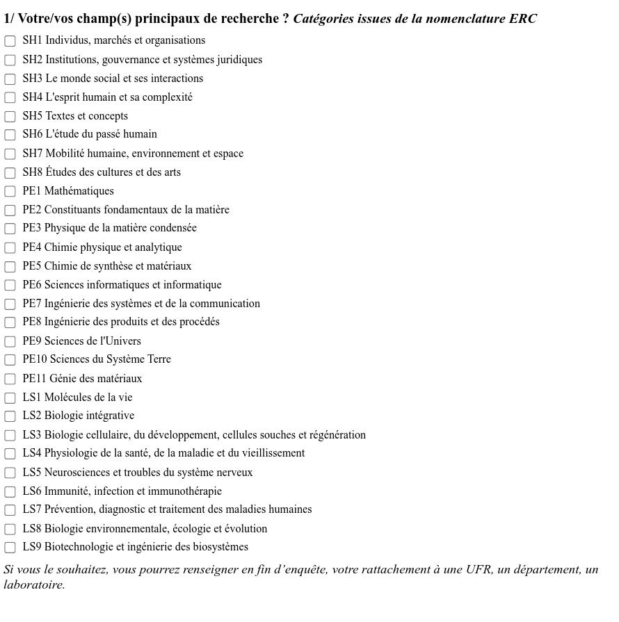
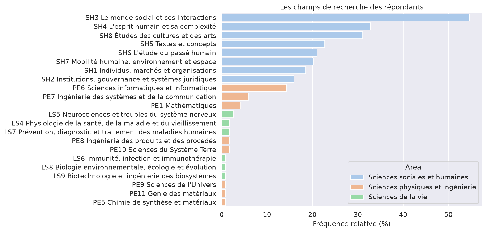

import pandas as pd
Principaux résultats#
Le profil des répondants#
Les 119 personnes ayant répondu au questionnaire se distribuent en trois groupes, comme nous l’avons mentionné en introduction. Il y a 104 enseignants-chercheurs et chercheurs, 12 doctorants et trois ingénieurs d’étude ou de recherche. 57 répondants ont précisé quelle était leur unité de recherche et 54 ont donné le nom de leur composante de rattachement (institut, UFR, UFE).
Le questionnaire invitait les répondants à préciser également leurs champs de recherche en sélectionnant un ou plusieurs sous-domaines parmi les 22 que compte la nomenclature du Conseil européen de la recherche (ERC). Ces 22 sous-domaines sont répartis en trois grands domaines : les sciences sociales et humanités (SH, Social Sciences & Humanities), les sciences physiques et de l’ingénieur (PE, Physical Sciences & Engineering), les sciences de la vie (LS, Life Sciences).

Fig. 1 Les champs de recherche, une question à choix multiples#
L’université Paris 8 se définit comme un pôle d’enseignement et de recherche dans “les domaines des Arts, Droit, Économie, Gestion, Lettres et Langues, Sciences Humaines et Sociales, et en Mathématiques, Informatique et Technologies du numérique”[1]. De fait 110 répondants sur 119 (92%) ont sélectionné au moins un sous-domaines des “sciences sociales et humanité”, 23 (19%) un sous-domaine des sciences physiques et 5 (4%) un sous-domaine des sciences de la vie.
Domaines |
Effectifs |
Fréquences relatives (%) |
|---|---|---|
Sciences sociales et humanités |
110 |
92,4 |
Sciences physiques et de l’ingénieur |
23 |
19,3 |
Sciences de la vie |
5 |
4,2 |
Total |
119 |
100,0 |
Le sous-domaine “SH3 Le mond social et ses interactions” est le plus représenté au sein de notre échantillon avec 55% des 119 enquêtés (Fig. 7). 33% se sont positionnés dans le sous-domaine des “SH4 L’esprit humain et sa complexité” et 31% dans le champ “SH8 Études des cultures et des arts. Dans le cas des deux autres domaine, 14% des enquêtés ont situé leurs recherche dans les “sciences informatiques et informatique” et 3% travaillent dans le sous-domaine “LS5 Neurosciences et troubles du système nerveux”.

Fig. 2 Les champs de recherche des répondants#
60% des répondants ont sélectionné plusieurs sous-domaines. La figure rend compte de ces croisements. Plus les “carrés” sont foncés, plus grand est le nombre de répondants ayant sélectionné les deux sous-domaines. Par exemple, 17 personnes ont sélectionné les sous-domaines “SH3 Le monde social et ses interactions” et “SH1 Individus, marchés et organisations”. Nous reviendrons sur ce point plus en détail dans la partie sur les cultures épistémiques, mais nous pouvons déjà distinguer quatre groupes:
Le premier est formé par les répondants travaillant au croisement des sciences informatiques et de l’ingénierie des systèmes ;
Le deuxième regroupe des personnes qui développent des recherches en sciences informatiques en lien avec des sous-domaines des sciences sociales et des humanités ;
Le second s’articule autour des champs du droit, des sciences sociales et de l’économie (sous-domaine “SH1 Individus, marchés et organisations” et “SH2 Institutions, gouvernance et systèmes juridiques” ;
Le quatrième est consitué des sous-domaines liés aux humanités (“SH5 Textes et concepts”, “SH8 Études des cultures et des arts”) ;
Fig. 3 Les champs de recherche des répondants#
Ces 57 répondants se répartissent au sein de 21 unités de recherche sur les 34 que compte l’université Paris 8. Les laboratoires les plus représentés (Table 7) sont Paragraphe (N=8, 7%), le Laboratoire d’économie dyonisien (LED, N=7, 6%), l’unité de recherche Fonctionnement et Dysfonctionnement Cognitifs (DYSCO, N=5, 4%), le laboratoire Dynamiques sociales et recomposition des espaces (LADYSS, N=4, 3%) et le Centre d’études sur les médias, les technologies et l’internationalisation (CEMTI, 3%).
En l’absence d’information complète, il est difficile de déterminer dans quel mesure les laboratoires sont sous ou sur-représentés. Il est probable en effet que certaines des personnes qui n’ont pas précisé
Unités de recherche |
Effectifs enquêtés |
% Total des enquêtés |
Effectifs prévisionnels EC 2026 total |
% total des effectifs prévisionnels |
|---|---|---|---|---|
Effectifs total |
119 |
100,0 |
628 |
100,0 |
Paragraphe |
8 |
6,7 |
38 |
6,1 |
LED |
7 |
5,9 |
50 |
8,0 |
DYSCO |
5 |
4,2 |
11 |
1,8 |
CEMTI |
4 |
3,4 |
23 |
3,7 |
LADYSS |
4 |
3,4 |
22 |
3,5 |
AIAC |
3 |
2,5 |
38 |
6,1 |
CHArt |
3 |
2,5 |
15 |
2,4 |
IDHES |
3 |
2,5 |
8 |
1,3 |
LAPPS |
3 |
2,5 |
11 |
1,8 |
Transferts critiques |
3 |
2,5 |
43 |
6,8 |
CRESPPA |
2 |
1,7 |
48 |
7,6 |
LIASD |
2 |
1,7 |
24 |
3,8 |
SFL |
2 |
1,7 |
24 |
3,8 |
ARSCAN |
1 |
0,8 |
6 |
1,0 |
CIRCEFT |
1 |
0,8 |
13 |
2,1 |
CRJP8 |
1 |
0,8 |
35 |
5,6 |
LIAGE (ex - EXPERICE) |
1 |
0,8 |
12 |
1,9 |
IHTP |
1 |
0,8 |
6 |
1,0 |
LEGS |
1 |
0,8 |
4 |
0,6 |
LER |
1 |
0,8 |
26 |
4,1 |
MUSIDANCE |
1 |
0,8 |
22 |
3,5 |
Non réponse |
62 |
52,1 |
— |
— |
Unités de recherche |
Effectifs prévisionnels EC 2026 total |
% total des effectifs prévisionnels |
|---|---|---|
Effectifs total |
628 |
100,0 |
FABLITT |
26 |
4,1 |
ESTCA |
23 |
3,7 |
LLCP |
15 |
2,4 |
Scènes du monde |
14 |
2,2 |
LAVUE (AUS) |
13 |
2,1 |
QUARTZ |
10 |
1,6 |
IFG-LAB |
10 |
1,6 |
Mondes allemands |
9 |
1,4 |
Section Clinique |
7 |
1,1 |
MEMO |
7 |
1,1 |
LAGA |
6 |
1,0 |
LCCP (ex LPN) |
6 |
1,0 |
Sophiapol |
3 |
0,5 |
Les principes de la Science Ouverte, sa pratique#
La Science Ouverte est un sujet qu’une majorité des personnes enquêtées semble connaître de façon “lointaine”. 56% des répondant (N=67) ont répondu “oui, un peu” à la question “diriez-vous que vous êtes familier.ère des principes de la Science Ouverte ?”. 32% “oui, tout à fait” (N=38) et 12% “non” (N=14).
Concernant les pratiques d’ouverture, 87% des répondants ont déposé des travaux sur Hal au moins une fois (depot_hal_stuatut). Sur les 15 personnes qui ne l’ont encore jamais fait (soit 13% des enquêtés), cinq sont des doctorants. On peut faire l’hypothèse que c’est lié au fait qu’ils n’ont pas encore de publication. En revanche, il est plus surprenant de constater que les 10 autres sont des chercheurs et il serait intéressant de comprendre pourquoi ils n’ont jamais déposé de travaux sur HAL.
q2_hal_depot |
Chercheur |
Doctorant |
Personnel d’appui à la recherche |
Total (%) |
|---|---|---|---|---|
Non |
10 |
5 |
0 |
15 (12,6) |
Oui, plusieurs fois |
42 |
4 |
2 |
48 (40,3) |
Oui, systématiquement |
40 |
0 |
1 |
41 (34,5) |
Oui, une fois |
12 |
3 |
0 |
15 (12,6) |
Total |
104 |
12 |
3 |
119 (100,0) |
L’ouverture des données de recherche est une pratique moins répandue parmi les personnes interrogées : 31 chercheurs, 1 doctorant et les 3 personnels ITRF ont déjà diffusé leurs données à l’issue d’un projet de recherche (Table 5). 16 de ces 35 personnes l’ont fait en déposant leur données dans des entrepots, qu’ils soit liés à des infrastructures de recherche françaises (Nakala, Data Paris 8, Ortolang, Coccoon) ou à d’autres institutions (Zenodo[1], Opens Science Framework).
Les autres pratiques de diffusion reposent sur du partage de pair à pair via une clé usb par exemple ou la mise à disposition sur une page Web personnelle.
Diffusion des données |
Chercheur |
Doctorant |
Personnel d’appui à la recherche |
Total |
|---|---|---|---|---|
N’a jamais diffusé de données |
73 |
11 |
0 |
84 |
A diffusé des données |
**31 |
1 |
3 |
35 |
Autre solution |
16 |
0 |
3 |
19 |
*Via un entrepot” |
15 |
1 |
0 |
16 |
L’ouverture des données s’inscrit, idéalement, dans un cycle de gestion des données plus large. On distingue habituellement les opérations de stockage, de sauvegarde et d’archivage. Elles interviennent à des temps différents de l’activité de recherche [].
Le stockage intervient lorsque les données sont collectées et manipulées. Concrétement, c’est le moment où on enregistre ses données sur le disque dur interne de son ordinateur, d’un serveur ou un “cloud” afin qu’elles soient accessible quotidiennement.
On distingue le stockage de la sauvegarde au sens où cette dernière opération vise à garantir l’integrité des données en cas de défaillance d’un des supports sur lequel les données sont stockées.
L’archivage arrive au bout du cycle de vie des données. L’objectif de l’archivage est d’assurer l’intégrité des données dans le temps en prenant en compte par exemple l’obsolescence des supports . Dans un premier temps, les données peuvent être archivées en étant déposées dans un entrepot comme Nakala, Coccoon, Data Paris 8. Les infrastructures qui gérent ces entrepots s’engagent en effet à maintenir la pérennité et l’accessibilité des données sur une période de 10 à 15 ans. Puis, dans un second temps, elles peuvent faire l’objet d’un archivage à “long terme”, c’est-à-dire sur une période de 30 ans et plus. Surtout, à la différence des opérations de stockage et de sauvegarde, l’archivage est une opération déléguée aux acteurs responsables des archives de la recherche en France.
Dans le cas des pratiques déclarées par les enquêtés, la clé USB ou le disque dur externe sont les moyens les plus utilisés. 67% des personnes interrogées (N=80) emploient ce type de supports pour le stockage (N=80, 67%), 66% (N=79) pour la sauvegarde et 66% également pour l’archivage. On observe également que les clouds commerciaux comme Google Drive, Icloud sont utilisés par 48% des enquêtés que ce soit pour le stockage des documents ou la sauvegarde des données. Au regard de ces chiffres, on peut se demander si les distinctions opérées entre ces trois opérations — stockage, sauvegarde et archivage — font également sens pour les personnes enquêtées. Il pourrait alors être utile de sensibiliser les acteurs de la recherche aux différentes étapes du cycle de vie de la donnée.
Il nous semble intéressant de noter que 41% des répondants (N=49) ont déclaré qu’ils stockaient leurs “documents de travail”[1] sur papier. Cela montre qu’une partie non négligeable des éléments empiriques impliqués dans la production de connaissance n’est pas numérique ni numérisée. On peut penser aux carnets ethnographiques ou aux divers matériaux que les chercheurs collectent sur le terrain. Comment, dès lors, l’ouverture des données peut-elle prendre en compte la dimension matérielle de la recherche ?
La relative popularité des solutions commerciales évoquées au point précédent contraste avec l’usage confidentiel des services numériques proposées par l’université Paris 8 et, dans une moindre mesure, par l’infrastructure de recherche Huma-Num.
9% (N=11) des personnes interrogées ont déclaré qu’elles stockaient leurs documents sur un cloud de l’université et 4% (N=5) qu’elles sauvegardaient ou archivaient leur données sur les espaces disques de Paris 8. Parmi ces cinq personnes, trois mènent des recherche en sciences de l’informatiques ou en ingénierie des systèmes et de la communication.
Cette confidentialité ne concerne pas uniquement les outils de stockage, de sauvegarde et d’archivage. 9% (N=11) des personnes interrogées ont déjà déposé des “productions” sur Octaviana, la bibliothèque numérique de Paris 8, et une seule personne a ouvert ses données de recherche sur Data Paris 8, l’espace de l’université sur l’entrepot “Recherche Data Gouv”.
Au sujet des outils Huma-Num, 38% (N=45) des enquêtés ont déjà utilisé ShareDocs et 18% (N=22) ont fait des recherche via Isidore. Ce sont les services les plus connus. Nakala, l’hébergement web et l’instance Gitlab d’Huma-Num ont été chacun utilisé par une quinzaine de répondants.
Cette faible utilisation des outils Huma-Num peut s’expliquer en partie par le choix de l’infrastructure de peu communiqué sur les services qu’elles développent. Elle est probablement liée également au fait que certains outils sont encore à l’état d’expérimentation comme Stylo. Cet “éditeur de texte scientifique conçu spécialement pour les SHS”, qui n’a été utilisé que par 5 répondants, est issue “d’une première phase du travail en commun réalisé par les équipes de la CRC-EN[1] et de la TGIR Huma-Num”[].

Fig. 4 Les lieux de stockage, de sauvegarde et d’archivage des données#